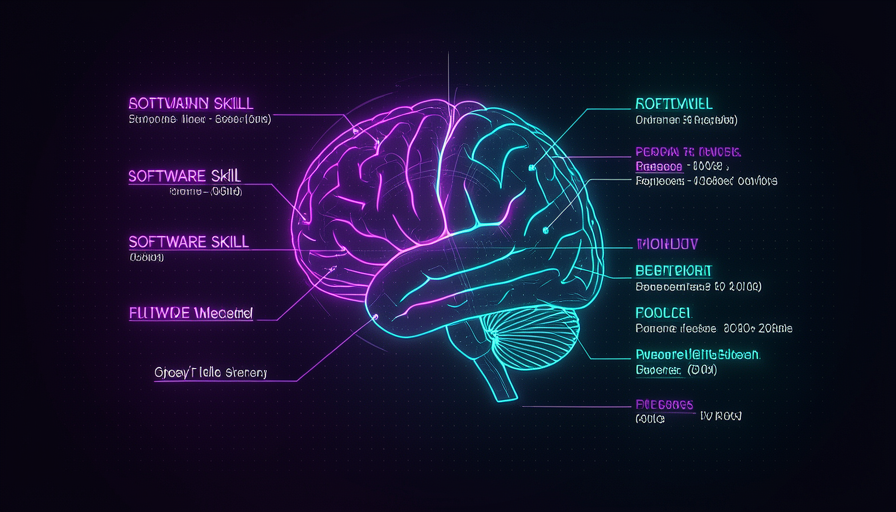
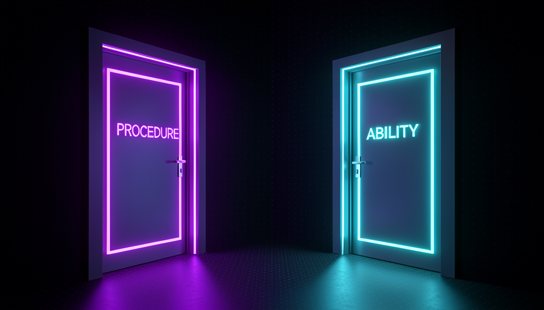
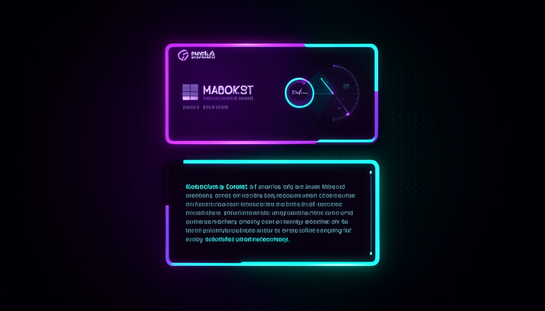

📖 Glossário vivo (leia antes — volte sempre que precisar)
A Trilha 1 já fixou o vocabulário base (modelo, prompt, agente, harness). Aqui valem os termos novos desta trilha de skills — fixe estes:
SKILL.md) que ensina o agente a fazer algo do seu jeito, sempre igual. É o "procedimento reutilizável" da Trilha 1, agora aberto por dentro.--- e ---. Traz name e description. É o "rótulo da lata".🧩 O que é uma skill
🧠 Imagine assim: imagine que você tem um funcionário novo muito esperto, mas que nunca trabalhou na sua empresa. Toda vez que ele faz uma tarefa, você precisa explicar de novo o jeito da casa. Uma skill é o "cartão de procedimento" plastificado que você cola na parede: ele lê uma vez e já faz do seu jeito — sempre igual.
Uma skill é, na prática, um arquivo de texto com instruções que você dá ao agente pra ele realizar uma tarefa sempre do mesmo jeito. O formato mais comum é um arquivo chamado SKILL.md (texto simples, em Markdown). Ele tem duas partes: um cabeçalho curto (o frontmatter) e o corpo, que são as instruções de verdade. Vamos abrir cada parte no tópico 2.
Por que isso importa tanto nesta trilha? Porque a skill é onde você codifica a sua maneira de trabalhar e devolve isso pro harness — sem precisar repetir tudo a cada conversa. Matt Pocock trata as skills como o coração do harness moderno: elas funcionam em vários agentes (Claude Code, Codex e outros) e se instalam com npx skills latest add. O erro comum de iniciante é confundir skill com "prompt longo que eu colo toda vez". Não: a skill fica salva, é versionável, dá pra distribuir pro time e — o ponto central deste módulo — ela pode ser acionada por você ou pela própria IA. Quem aperta o gatilho muda tudo.
A mesma skill, dois gatilhos possíveis: você ou o modelo. Essa escolha é o tema do módulo.

⚠️ Erro comum de iniciante
Tratar skill como "prompt que colo toda vez". Skill é arquivo salvo, reutilizável e distribuível — e o quem-aciona dela (você ou a IA) é uma decisão sua, não um detalhe.
Em 1 frase: uma skill é um arquivo de instruções salvo (cabeçalho + corpo) que pode ser acionado por você ou pelo próprio modelo.
Indo mais fundo (opcional): por que o formato é só Markdown?
Markdown é texto puro — o mesmo "idioma" em que o modelo já pensa. Por isso uma skill não precisa de compilador nem de código: é instrução em linguagem natural, com um cabeçalho mínimo pra o agente saber quando ela serve. Isso é o que deixa a mesma skill rodar em Claude Code, Codex e companhia: todos leem o mesmo arquivo de texto.
🏷️ Frontmatter e corpo
🧠 Imagine assim: pense numa lata de comida. O rótulo diz o nome e pra que serve ("molho de tomate · pra massas"). O conteúdo é o molho de verdade. Numa skill, o frontmatter é o rótulo; o corpo é o molho.
Toda skill tem duas partes bem separadas. A primeira é o frontmatter: um bloquinho no topo, entre --- e ---, com dois campos essenciais — name (o nome curto) e description (uma frase dizendo o que a skill faz e quando usá-la). A segunda parte é o corpo: tudo depois do cabeçalho, em texto livre. É lá que mora o passo a passo, as regras, os exemplos.
A diferença prática entre as duas é crucial e volta no resto do módulo: o corpo só é lido quando a skill é acionada; já a description do frontmatter pode ficar "à vista" do modelo o tempo todo, pra ele decidir sozinho se chama a skill. Nas palavras de Pocock, "toda skill vaza a sua description na janela de contexto". Ou seja: o rótulo custa contexto mesmo quando a skill não é usada; o corpo, não. Guarde isso — é a semente do módulo 3.2 ("custo de contexto da skill"). O erro comum aqui é escrever uma description gigante "pra garantir": ela vira peso morto no contexto. Boa description é curta e diz exatamente o gatilho.
--- name: commit-conventional description: Cria a mensagem de commit no padrao Conventional Commits a partir das mudancas em stage. Use quando o usuario pedir "commita", "faz o commit" ou "gera a mensagem de commit". --- # Commit Conventional Quando acionada, faca nesta ordem: 1. Rode `git diff --staged` e leia o que mudou. 2. Escolha o tipo: feat | fix | docs | refactor | test | chore. 3. Escreva o titulo: `tipo(escopo): resumo no imperativo` (ate 72 chars). 4. No corpo, explique o PORQUE da mudanca em 1-3 linhas (nao o "o que"). 5. Se houver breaking change, adicione `BREAKING CHANGE:` no rodape. 6. Mostre a mensagem final e PERGUNTE antes de rodar `git commit`. Regras: - Nunca invente arquivos que nao estao no diff. - Portugues, voz imperativa, sem emoji no titulo.
Exemplo real de SKILL.md: entre os --- está o frontmatter (rótulo); abaixo, o corpo (o procedimento).
Em 1 frase: frontmatter = rótulo curto que fica à vista (e custa contexto); corpo = o procedimento, lido só quando a skill é acionada.
🕹️ Procedures (você invoca)
🧠 Imagine assim: uma procedure é como o botão de "modo turbo" do seu carro: ela só liga quando você aperta. O carro nunca decide ligar o turbo sozinho — quem manda é o motorista.
O primeiro dos dois tipos de skill é a procedure. A regra de ouro: quem aciona é você. Você invoca a skill de propósito — digitando o nome dela, escolhendo no menu, rodando um comando — e ela faz o modelo "se comportar de um jeito" que você definiu. Nas palavras de Pocock, procedures são skills que "fazem o modelo se comportar de um jeito" e que você dispara. Exemplos do dia a dia dele: a skill grill-me (que vira o modelo num entrevistador), a two-PRD e a to-issues — ele encadeia as três na ordem que ele quer.
Por que isso importa? Porque com procedures você fica no volante. Você decide qual procedimento entra, quando entra e em que sequência. Não há surpresa: o modelo não puxa nada por conta própria. Pocock é explícito sobre preferir esse modo: "I know my skills, I don't want to delegate my thinking" — eu conheço minhas skills, não quero delegar meu pensamento. O erro comum é achar que isso é "trabalho a mais". Na verdade é controle: você troca um pouco de automação por previsibilidade total, e ainda evita que descrições fiquem vazando no contexto (tema do 3.2).

Em 1 frase: procedure = a skill que você aciona de propósito pra fazer o modelo se comportar do jeito que você decidiu.
🤖 Abilities (o modelo invoca)
🧠 Imagine assim: uma ability é como o freio ABS do carro: você não aperta nada — o carro sente a situação (derrapagem) e aciona sozinho. A ability é a skill que a IA puxa por conta própria quando "percebe" que precisa.
O segundo tipo é a ability. Aqui a regra de ouro vira do avesso: quem aciona é o modelo. Ele lê a description das skills disponíveis e, quando "acha" que uma se encaixa na tarefa, a puxa sozinho — sem você pedir. O exemplo que Pocock dá é uma skill de coding standards (padrões de código): o modelo a invoca automaticamente quando vai escrever React, porque a descrição diz algo como "use ao escrever componentes React". A skill então lembra o modelo de regras como "não deve usar useEffect, deve usar outra coisa".
A vantagem é a automação: a regra certa entra na hora certa, sem você lembrar de invocar. A desvantagem — e é por isso que Pocock pesa a mão — é que o modelo decide, e cada ability precisa manter sua description à vista pra ser "encontrável". Como vimos, isso vaza contexto: 100 skills viram 100 descrições penduradas na janela. Outra escola, a Superpowers (do projeto Obra), abraça justamente esse modo — modelo no controle. Pocock prefere o oposto. O erro comum é encher o setup de abilities "porque é automático" e descobrir tarde que o contexto ficou poluído e o comportamento, imprevisível.
🔬 Exemplo resolvido: mesma regra, dois caminhos
Cenário: você quer que, ao escrever React, o agente nunca use useEffect sem necessidade. Mesma regra, embalada de dois jeitos:
Como ABILITY
description: "Padrões de React. Use ao escrever componentes." → o modelo lê isso, percebe que vai escrever React e puxa a skill sozinho. Automático, mas a descrição vaza no contexto sempre.
Como PROCEDURE
Mesma skill com disable model invocation: true. → o modelo não a vê; você digita /react-standards quando quer. Previsível e não polui o contexto — o jeito que Pocock prefere.
Conclusão: o conteúdo da skill pode ser idêntico. O que muda é quem aperta o gatilho — e esse é o ajuste de design que você controla.
Em 1 frase: ability = a skill que o modelo aciona sozinho ao ler a description — cômodo, mas ele decide e o rótulo fica vazando.
🚪 As duas portas
🧠 Imagine assim: a mesma sala (a skill) tem duas portas. A porta da esquerda só abre com a sua chave (procedure). A porta da direita o modelo pode abrir sozinho (ability). Você decide quais portas deixar destrancadas.
Agora junte tudo. Procedure e ability não são duas coisas diferentes — são duas portas de entrada pra mesma skill. O conteúdo (o corpo) pode ser idêntico; o que muda é quem tem a chave. Por isso Pocock fala em "dois tipos de skill" mas, no fundo, é uma decisão de design por skill: deixo o modelo invocar (ability) ou tranco essa porta e só eu invoco (procedure)? O ajuste técnico que tranca a porta do modelo é o disable model invocation — você o vê em detalhe no módulo 3.2.
A consequência prática é grande. Toda porta de modelo aberta tem um custo: a description daquela skill fica pendurada no contexto pra o modelo poder encontrá-la. Trancar a porta (procedure pura) zera esse custo e te devolve previsibilidade. Pocock, por preferir estar "no volante", deixa a maioria das portas-do-modelo trancadas e mantém o conhecimento com o humano — ele cita a skill engineering zoom out como uma das que ele esconde do modelo. Não é regra universal: é o estilo dele. O erro comum é nem perceber que existe essa escolha — a pessoa instala 50 skills, todas como ability, e o contexto vira uma feira.
Recuperação rápida: numa ability, quem aciona a skill?
Em 1 frase: procedure e ability são duas portas da mesma skill — a diferença é quem tem a chave (você ou o modelo).
🎯 Qual usar quando
🧠 Imagine assim: piloto automático × volante. No piloto automático (ability) o carro decide; no volante (procedure) você decide. Estradas conhecidas e críticas pedem volante; tarefas repetitivas e seguras toleram piloto automático.
Fechando: a escolha não é "qual é melhor", é "quem deve decidir nesta skill". Use ability quando a regra é genérica, sempre desejável e barata de errar (ex.: padrões de estilo que sempre valem) — vale a comodidade de o modelo puxar sozinho. Use procedure quando você quer estar no volante: tarefas de raciocínio, encadeamento de etapas, ou qualquer coisa onde a previsibilidade importa mais que a automação. Pocock encadeia grill-me → two-PRD → to-issues como procedures justamente por isso. E lembre do custo: cada ability mantém sua description vazando no contexto, então trancar portas (procedure) também é higiene. Use o guia abaixo quando for criar ou auditar uma skill:
Pra cada skill, pergunte: QUEM deve apertar o gatilho?
ESCOLHA ABILITY (modelo invoca) se:
[ ] a regra vale quase sempre que o tema aparece (ex.: padroes de React)
[ ] errar o momento e barato
[ ] voce QUER automacao, nao controle fino
ESCOLHA PROCEDURE (voce invoca) se:
[ ] e raciocinio / planejamento / etapas encadeadas
[ ] previsibilidade > automacao ("quero estar no volante")
[ ] a description ocupando contexto te incomoda -> disable model invocation: true
Regra de bolso (estilo Pocock): na duvida, PROCEDURE.
"I know my skills, I don't want to delegate my thinking."

Recuperação rápida: por que Pocock, na dúvida, prefere procedure?
Em 1 frase: ability pra regras genéricas e baratas de errar; procedure (na dúvida, esta) pra raciocínio e controle.
🧾 Resumo do Módulo
Próximo módulo:
3.2 — Custo de contexto da skill: por que cada description "vaza", o que são 100 skills no contexto, e como usar disable model invocation.